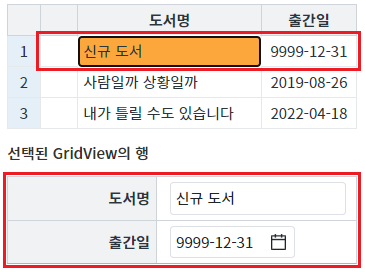
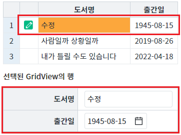

DataList의 함수 'setBroadcast'를 통해 Broadcast 기능을 비활성화했을 때의 동작을 확인할 수 있습니다.
DataList의 Broadcast 기능은 DataList의 데이터가 변경 시, 연결된 컴포넌트에 데이터를 전파(반영)하는 기능입니다. 기본 설정값은 true이며, 데이터 변경 시 DataList와 연결된 컴포넌트가 즉시 갱신됩니다. DataList의 함수 'setBroadcast'를 이용해 이 기능을 활성화 또는 비활성화할 수 있습니다.
DataList의 Broadcast 기능은 DataList의 데이터가 변경 시, 연결된 컴포넌트에 데이터를 전파(반영)하는 기능입니다. 기본 설정값은 true이며, 데이터 변경 시 DataList와 연결된 컴포넌트가 즉시 갱신됩니다. DataList의 함수 'setBroadcast'를 이용해 이 기능을 활성화 또는 비활성화할 수 있습니다.
DataList의 함수 'setBroadcast'를 이용해 Broadcast 기능을 비활성화 또는 활성화하기
STEP1. 초기 상태 확인하기
다음은 화면에 구성된 각 버튼의 기능 설명입니다.
DataList 초기화 : DataList의 상태를 초기 상태로 설정합니다.
데이터 수정 스크립트 실행하기 : 스크립트로 1번째 행의 '도서명'의 값을 '수정'으로 '출간일'의 값을 '19450815'으로 수정합니다.
Broadcast 상태 확인하기 : DataList의 Broadcast 기능의 활성화 여부를 반환합니다.
Broadcast 비활성화하기 : DataList의 Broadcast 기능을 비활성화합니다.
Broadcast 활성화하기 : DataList의 Broadcast 기능을 활성화합니다.
DataList 'dlt_books'는 GridView와 'GridView 연결된 입력 화면' 하단에 구성된 InputBox, InputCalendar와 연결되어있고, GtidView의 첫 번째 행의 '도서명'이 선택되어 있습니다.
그림 1.브라우저(Chrome) 실행 예시

STEP2. DataList의 Broadcast 기능의 활성화 여부를 확인합니다.
버튼 Broadcast 상태 확인하기를 클릭합니다. 영역 [로그 확인]에 출력된 로그를 확인합니다. DataList 'dlt_books'의 Broadcast 기능의 활성화 여부를 반환합니다. 'dlt_books'의 Broadcast 기능은 활성화되어 있습니다. ----------------------------------------------------------------- 로그 예시 [10:50:11] # 'dlt_books'의 Broadcast 기능의 활성화 여부 : true [10:50:11] 연결된 컴포넌트가 즉시 갱신됩니다. ----------------------------------------------------------------- (브라우저의 개발자 도구 콘솔에도 로그가 출력되며, 반환된 객체를 확인할 수 있습니다.)
STEP3. Broadcast 기능을 비활성화합니다.
버튼 Broadcast 비활성화하기를 클릭합니다.
DataList 'dlt_books'의 Broadcast 기능이 비활성화됩니다.영역 [로그 확인]에 로그가 출력됩니다. (브라우저의 개발자 도구 콘솔에도 로그가 출력됩니다.) ----------------------------------------------------------------- 로그 예시 [10:50:38] # 'dlt_books'의 Broadcast 기능을 비활성화합니다. [10:50:38] DataList와 연결된 컴포넌트의 데이터가 갱신되지 않습니다. ---------------------------------------------------------------
STEP4. GridView의 데이터를 수정합니다.
버튼 데이터 수정 스크립트 실행하기를 클릭합니다.
아래의 스크립트가 실행됩니다.dlt_books.setCellData(0, "book_name", "수정"); dlt_books.setCellData(0, "published_date", "19450815");
DataList의 데이터가 변경되었지만 화면에 구성된 컴포넌트의 데이터에는 변화가 없습니다.
그림 2.브라우저(Chrome) 실행 예시
STEP4. Broadcast 기능을 활성화합니다.
버튼 Broadcast 활성화하기를 클릭합니다.
DataList 'dlt_books'의 Broadcast 기능이 활성화되어 화면에 구성된 컴포넌트의 데이터가 변경됩니다.그림 3.브라우저(Chrome) 실행 예시

영역 [로그 확인]에 로그가 출력됩니다. (브라우저의 개발자 도구 콘솔에도 로그가 출력됩니다.) ----------------------------------------------------------------- 로그 예시 [11:13:40] # 'dlt_books'의 Broadcast 기능을 활성화합니다. [11:13:40] DataList와 연결된 컴포넌트의 데이터가 갱신됩니다.
원하는 시점에 DataList의 함수 'setBroadcast'를 이용하여 스크립트를 작성합니다.
[소스 코드 예시]
// DataList 'dlt_books'의 broadcast 기능을 비활성화합니다. dlt_books.setBroadcast(false); // 'try/catch/finally' 구문을 작성한 이유는 로직 실행 중 오류가 발생할 경우를 'finally' 영역을 실행하기 위함입니다. try { // 데이터 조작 로직 구성 dlt_books.setCellData(0, "book_name", "수정"); dlt_books.setCellData(0, "published_date", "19450815"); } catch (ex) { // 오류 발생 시 로직 구성 console.error(ex); } finally { // DataList 'dlt_books'의 broadcast 기능을 활성화하고 연결된 컴포넌트들을 즉시 갱신합니다. dlt_books.setBroadcast(true, true); }
setBroadcast
[웹스퀘어5 SP5 개발 가이드] DataList
링크 : https://docs1.inswave.com/sp5_user_guide/e8b94a03286e4f9f#9954ca390ab74983
[웹스퀘어5 SP5 개발 가이드] 성능 개선 가이드 - 반복문 내에 사용시 이벤트 중지 후 처리
링크 : https://docs1.inswave.com/sp5_user_guide/5f4b3b7ceca5e65b#53f9319a4df9d719